A.1 Shoot the Pictures
For this project I took sets of photos by standing in one spot and turning the camera between shots, so that the only thing changing between frames is the rotation. That keeps the center of projection fixed, which is what makes the transform between any two frames a homography. I aimed for about 60% overlap between neighbors.
The first set is seven frames of a courtyard from a balcony. The second is five frames of my room. Both are \(3840 \times 2160\). The third set is a blossom branch from an open panorama dataset, four frames at \(1200 \times 795\).

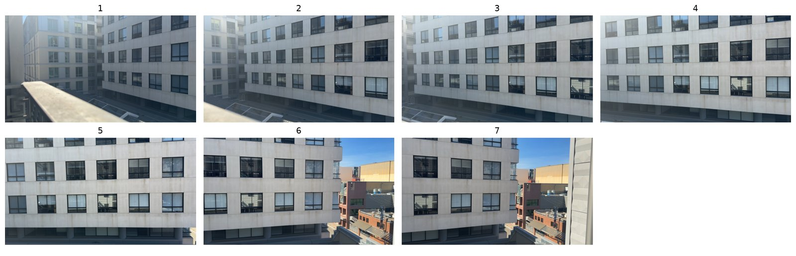

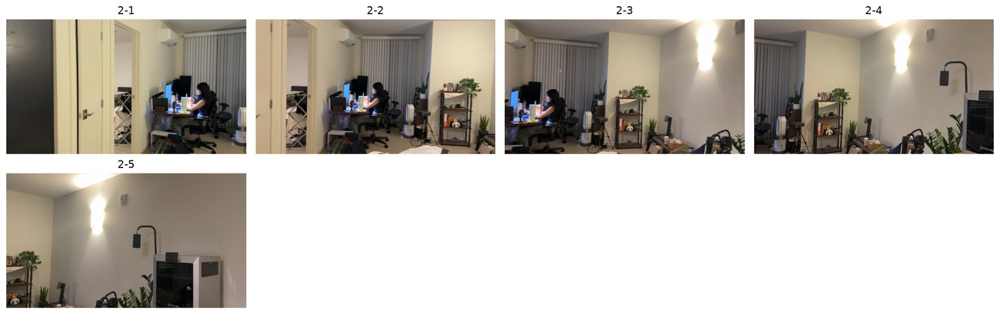

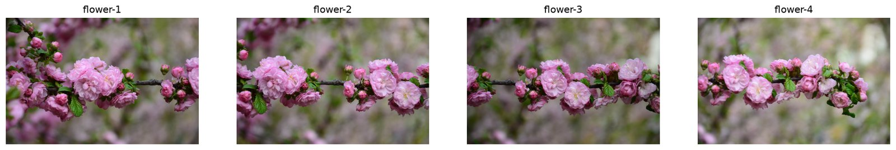
I also took one photo of a tissue box on my desk, at an angle, to test rectification on.

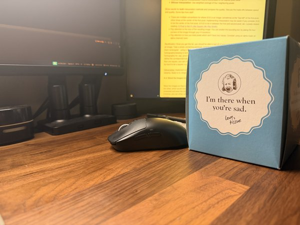
A.2 Recover Homographies
A homography maps a point in one image to a point in the other, up to scale: \[ \begin{pmatrix} x' \\ y' \\ 1 \end{pmatrix} \sim \begin{pmatrix} a & b & c \\ d & e & f \\ g & h & 1 \end{pmatrix} \begin{pmatrix} x \\ y \\ 1 \end{pmatrix}. \] The bottom-right entry is fixed to 1, so there are eight unknowns. Writing out the division by the third row, \[ x' = \frac{ax + by + c}{gx + hy + 1}, \qquad y' = \frac{dx + ey + f}{gx + hy + 1}. \] These aren't linear in the unknowns because of the denominator, but multiplying it out fixes that. Each correspondence then gives two linear equations: \[ \begin{pmatrix} x & y & 1 & 0 & 0 & 0 & -x x' & -y x' \\ 0 & 0 & 0 & x & y & 1 & -x y' & -y y' \end{pmatrix} \begin{pmatrix} a \\ b \\ c \\ d \\ e \\ f \\ g \\ h \end{pmatrix} = \begin{pmatrix} x' \\ y' \end{pmatrix}. \]
computeH stacks these rows for all \(n\) points into a \(2n \times 8\) matrix \(A\) and solves
\(A\mathbf{h} = \mathbf{b}\) with np.linalg.lstsq. Four points would be enough to solve it exactly, but
a few pixels of click error then swing \(g\) and \(h\) a lot, so I use more than four and let least squares average the
error out. I checked the function on a made-up \(H\) and random points first; it recovers the matrix to \(10^{-10}\).
Correspondences
I wrote a small matplotlib clicking tool for this. It shows the two images side by side, alternates clicks between them, and lets me zoom with the toolbar before clicking, which matters because an error of a couple of pixels is visible in the mosaic. I picked 6–8 points per pair, on window corners, buds, and other sharp features spread across the overlap.
Two of my first clicks on the courtyard were on the wrong window. The facade repeats, and from the zoomed view the windows all look alike. I found them by leaving out one point at a time and recomputing \(H\): dropping the bad point took the mean error from hundreds of pixels down to a few.

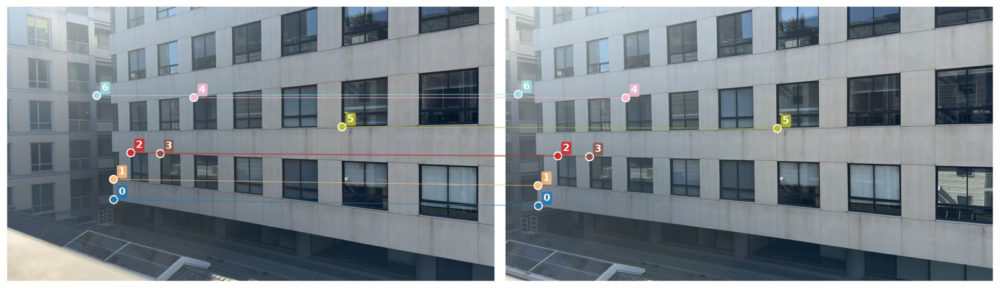

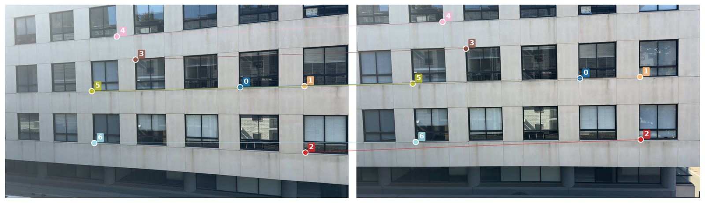

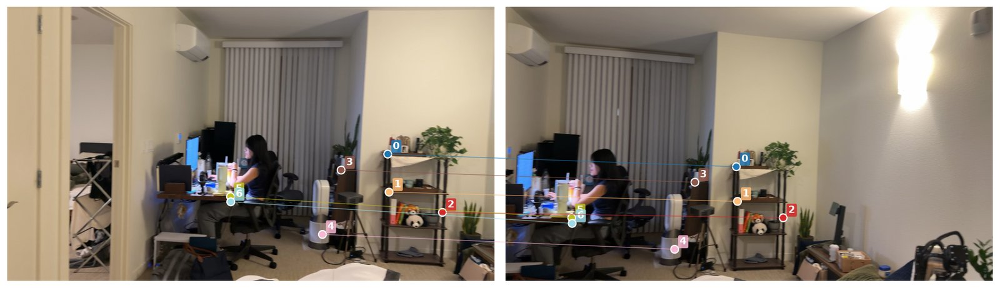

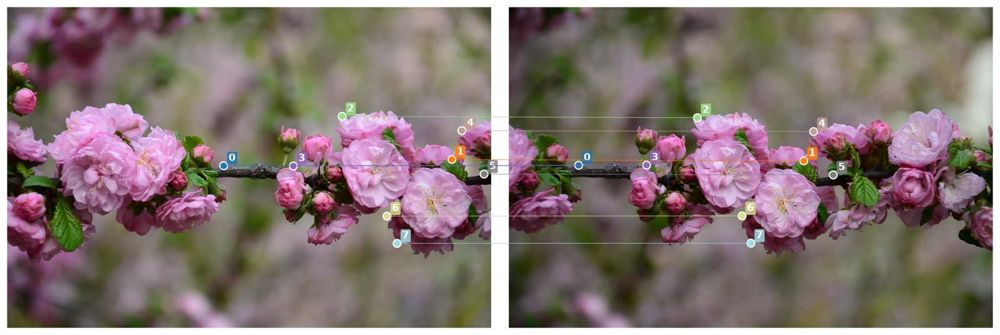
System of equations and recovered H
For set 1, images 2 → 3, there are seven correspondences, so \(A\) is \(14 \times 8\). Here are the first four rows, from the first two points, in pixels:
[ 836.9 1517.3 1.0 0.0 0.0 0.0 -216019.7 -391634.7 ] h = 258.1
[ 0.0 0.0 0.0 836.9 1517.3 1.0 -1311433.7 -2377574.8 ] h = 1567.0
[ 835.2 1357.6 1.0 0.0 0.0 0.0 -212598.3 -345602.5 ] h = 254.6
[ 0.0 0.0 0.0 835.2 1357.6 1.0 -1175299.8 -1910582.3 ] h = 1407.3The least-squares solution is \[ H_{2 \to 3} = \begin{pmatrix} 1.1971 & 0.0145 & -749.64 \\ 0.0427 & 1.1467 & -113.42 \\ 4.5 \times 10^{-5} & 1.4 \times 10^{-5} & 1 \end{pmatrix}. \] The big negative \(c\) is the camera panning right, and the tiny \(g, h\) are the perspective between the two views. The columns of \(A\) range from 1 to about \(10^6\), which is why the solve is so sensitive to click error.
A.3 Warp the Images
Both warps use inverse mapping. I push the four corners of the input through \(H\) to find the output bounding box, then for every output pixel center I go backwards through \(H^{-1}\), divide by \(w\), and land on a fractional source location \((u, v)\). Doing it this way means every output pixel gets filled and there are no holes. I treat pixel \((i, j)\) as centered at \((u, v) = (j, i)\), and anything that lands outside \([0, W-1] \times [0, H-1]\) gets alpha 0, so the output carries an alpha channel saying where it has real data.
Nearest neighbor just rounds \((u, v)\) and reads that pixel. Bilinear takes the four pixels around it and weights them by how close it is to each. With \(u_0 = \lfloor u \rfloor\), \(v_0 = \lfloor v \rfloor\) and fractional parts \(f_u = u - u_0\), \(f_v = v - v_0\), \[ I(u, v) = (1-f_u)(1-f_v)\, I[v_0, u_0] + f_u (1-f_v)\, I[v_0, u_0+1] + (1-f_u) f_v\, I[v_0+1, u_0] + f_u f_v\, I[v_0+1, u_0+1]. \] Both are vectorized over the whole output grid, so there is no Python loop over pixels.
Rectification
To test everything on a single photo I click the four corners of something I know is a rectangle, then make up the
second set of points by hand: an axis-aligned rectangle whose width and height are the average measured side lengths.
Four pairs is exactly enough for computeH, and warping the whole image with that \(H\) should make the
object square-on.
One thing that bit me: when the plane is steep, part of the image maps past the plane's horizon. Those output pixels have \(w \le 0\) in the inverse map, and if you sample them anyway you get a mirrored copy of the scene. I mask them out.

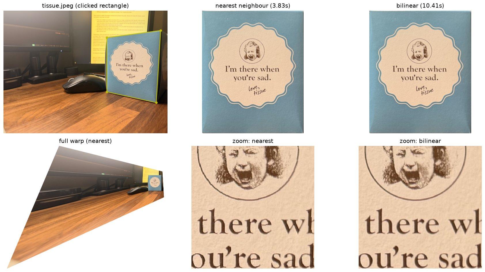

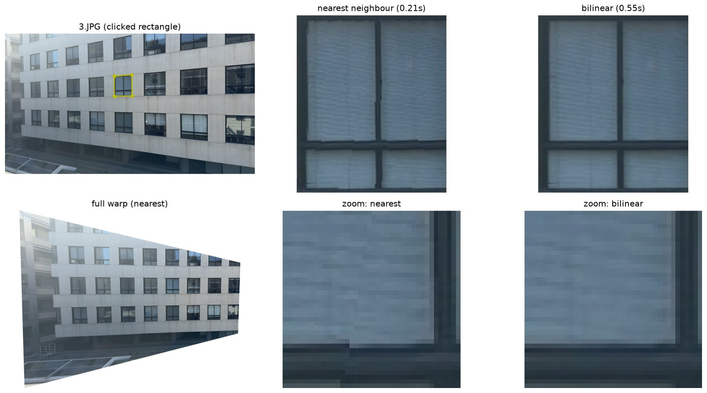

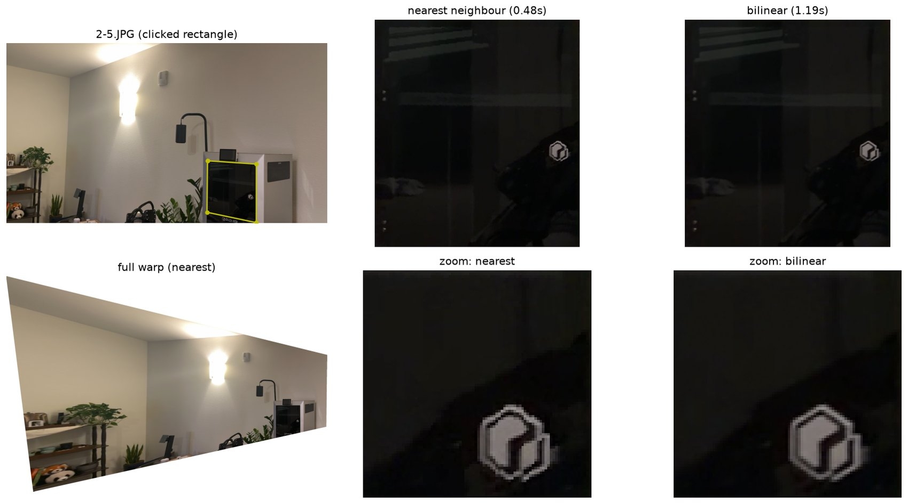
For the tissue box the four corners give \[ H_{\text{tissue}} = \begin{pmatrix} 3.475 & 0.000 & -6253.7 \\ 0.384 & 2.895 & -2059.2 \\ 9.6 \times 10^{-4} & -1.7 \times 10^{-4} & 1 \end{pmatrix}. \] The box face comes out square and the desk, which is on a different plane, stretches into a long wedge, which is what should happen.
Nearest neighbor vs. bilinear
| Image (half resolution) | Output size | Nearest | Bilinear |
|---|---|---|---|
| Facade window | 2280 × 1834 | 0.21 s | 0.55 s |
| 3D printer door | 3947 × 2658 | 0.48 s | 1.19 s |
| Tissue box | 10997 × 8618 | 3.8 s | 10.4 s |
The zoomed crops show the difference. Wherever the warp magnifies the source, nearest neighbor turns edges into staircases, because runs of output pixels round to the same source pixel and then jump a whole pixel at once. You can see it on the window mullion, the tissue box lettering, and the printer logo. Bilinear keeps those edges straight, at the cost of a slightly softer texture on things like the paper grain.
Bilinear reads four pixels and computes four weights per output pixel instead of one lookup, and in my NumPy version that is about 2.5–3× slower. For previews, or when the warp is close to identity, nearest is fine. For anything being magnified or rotated I'd use bilinear.
A.4 Blend the Images into a Mosaic
Procedure
I went with the one-shot approach: pick the middle image of each set as the reference, warp everything into its projection, and blend once at the end.
I only have homographies between neighbors, so I chain them. Going right from the reference, \(H_{i \to \mathrm{ref}}\) is a product of the pairwise matrices; going left it is a product of their inverses. Then I push every image's corners through its \(H_{i \to \mathrm{ref}}\) and take the union bounding box as the canvas. A planar projection stretches the outermost frames of a wide sweep enormously, so I clip the canvas to a few image widths on each side of the reference.
Each image is warped onto that shared canvas with bilinear interpolation. Before warping I append a fourth channel, a feathering weight that is 1 at the center and falls linearly to 0 at the border (the distance transform of the border), so it gets warped along with the colors and I don't have to recompute it in the output frame.
A plain feathered average over the images already removes hard seams, but wherever my registration is off by a
pixel or two it superimposes two shifted copies and edges ghost. The spec suggested a Laplacian pyramid for that, and
two bands turned out to be enough. Each warped image is split into a low band (Gaussian blur with \(\sigma\) about 3%
of an image width, normalized by the blurred alpha so the black outside the image doesn't bleed in) and a high band, the
Laplacian residual, using laplacian_stack from project 2.
Every canvas pixel is owned by whichever image has the largest feathering weight there. The high band is combined with those hard ownership masks, so every edge comes from exactly one image and can't ghost. The low band is combined with the same masks blurred by the same Gaussian, so exposure differences fade over a wide transition instead of stepping. Adding the two bands gives the mosaic. The high-band masks can also be blurred by a small \(\sigma\), which turns the hard cut into a narrow crossfade; I needed that for the third set which had more background variation.

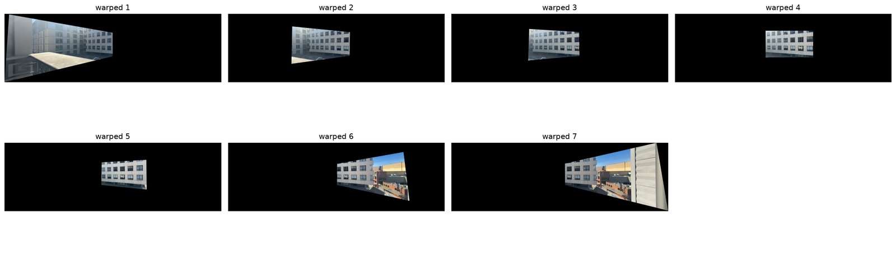

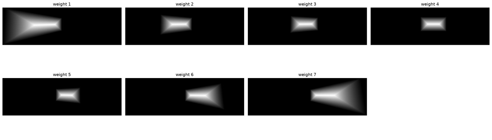

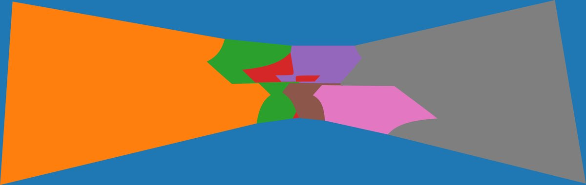
Mosaic 1: courtyard

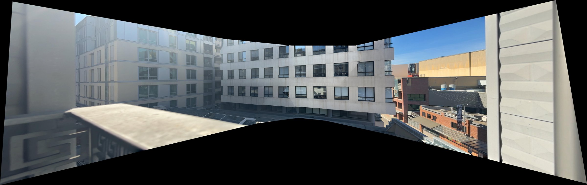

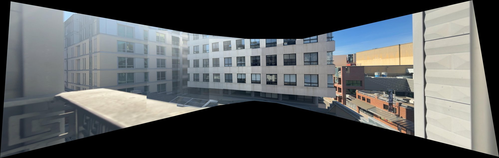

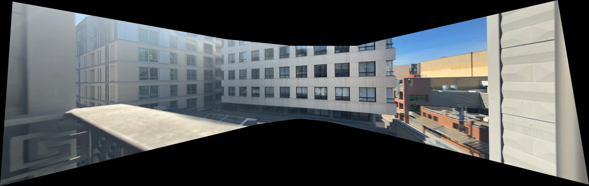
The overwrite version shows what the blend has to fix: a hard edge wherever one frame ends, plus a brightness step, since the right side of the sweep is in sun and the left is in shade. Feathering removes both, but the window frames in the middle of the facade double up. The two-band result keeps the smooth exposure ramp from the low band while every window edge comes from a single frame.
Mosaic 2: room

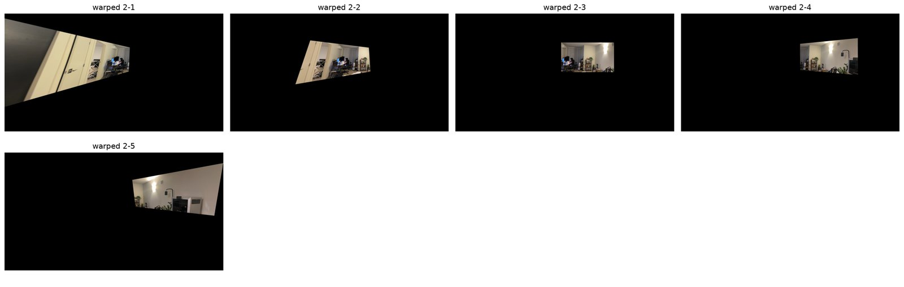

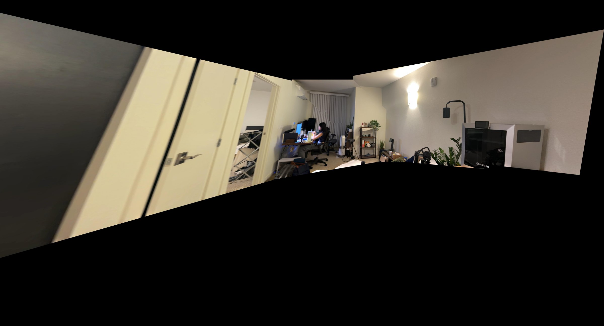

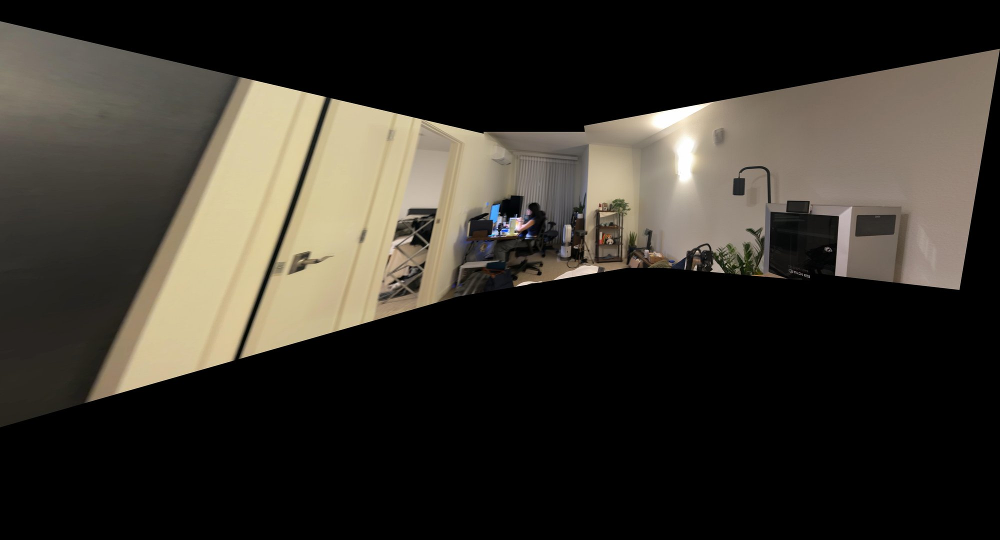
This set spans a wider angle, and the leftmost frame is mostly an open door about a meter from the camera. The planar projection stretches that frame to several times its size, and because the door is so close, the far wall and the door can't both satisfy one homography. The wall, desk and shelf register well; the door is where it shows.
Mosaic 3: blossom branch (open pano dataset)

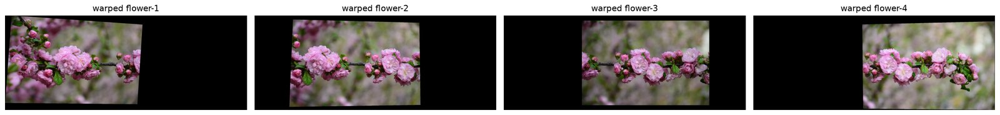

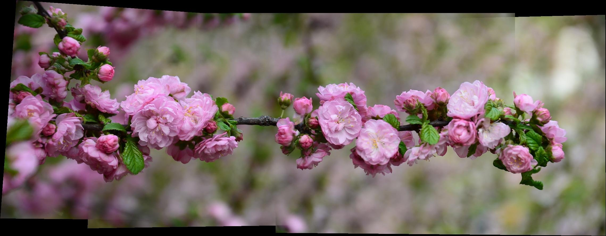

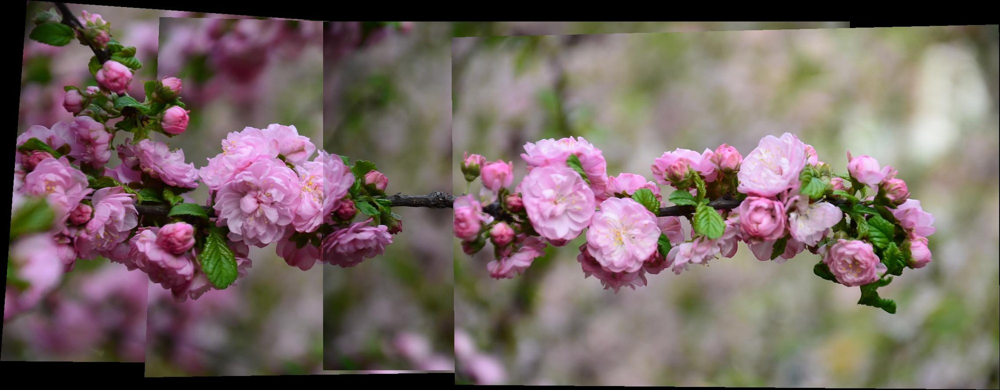

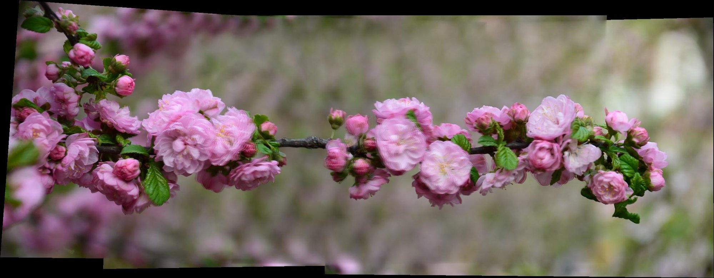
The branch registered to about 2 px, but the first two-band result had a visible line in the background at every seam. My first guess was exposure, so I made the low-band blur wider. That did nothing. The real problem is that the out-of-focus background is far behind the branch and doesn't follow the branch's homography, so at a hard cut the bokeh simply doesn't line up. Crossfading the high band over 30 px hides that discontinuity, and the petals, which are registered correctly, stay sharp.
B.1 Detecting Corner Features
For our automatic feature detection, we follows a version simplified of the MOPs paper by Brown et. al. choosing Harris corners as our base features, which gives us localization in two directions by detecting intensity extrema where thresholded by how close they are to being umbillic points.
For a more uniform distribution of features, we use the adaptive non-maximal suppresion algorithm proposed in Brown et. al. below. This algorithm gives corners which have stronger responses in their locality a larger radii of influence.
\[ r_i = \min_j \, \lVert \mathbf{x}_i - \mathbf{x}_j \rVert \quad \text{s.t.} \quad f(\mathbf{x}_i) < c \, f(\mathbf{x}_j) \]We only choose the strongest 5000 points for ANMS due to compute constraints and because 5000 inputs generally provides enough coverage to get sufficiently many descriptors.
| Image (half resolution) | Harris corners | Into ANMS | After ANMS |
|---|---|---|---|
| Courtyard, image 2 | 50789 | 5000 | 500 |
| Room, image 3 | 53481 | 5000 | 500 |
| Blossom, image 2 | 5674 | 5000 | 500 |

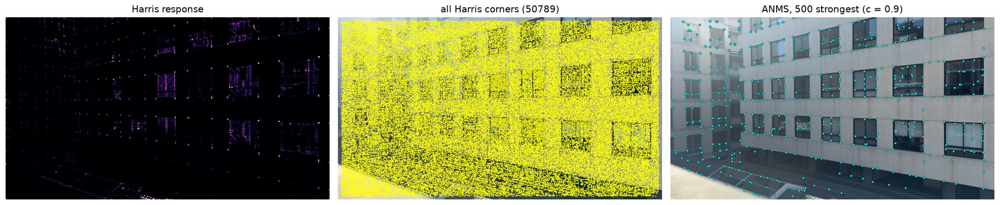

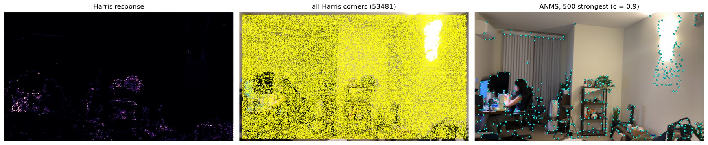

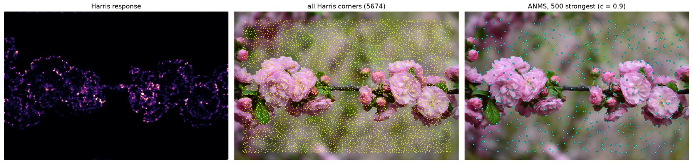
Demonstrated on images from the mosaics in Part A, we can see how harris corners with ANMS create even coverage of possible points for which we can extract features. The room image also shows that accidental correspondences won't be detected due to the thresholding (taking only top 5000 features) of the initial harris response.
B.2 Extracting Feature Descriptors
To extract features, we apply a low pass filter and sample 8x8 windows surrounding the ANMS filtered harris responses, then apply bias and variance noramlization. This implementation does not have rotation invariance.
\[ d = \frac{p - \mu_p}{\sigma_p}, \qquad p \in \mathbb{R}^{8 \times 8} \]
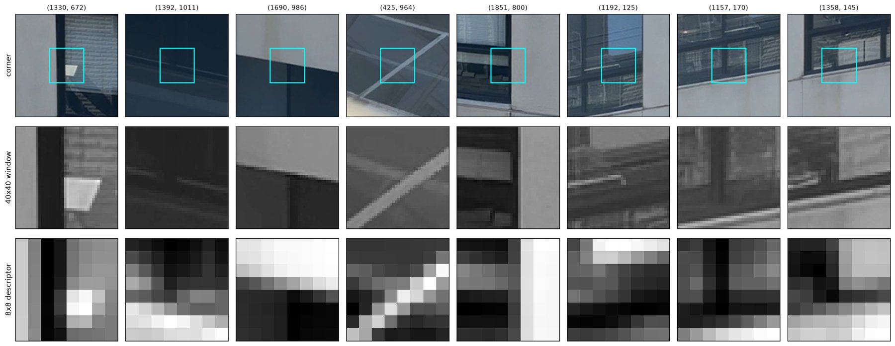

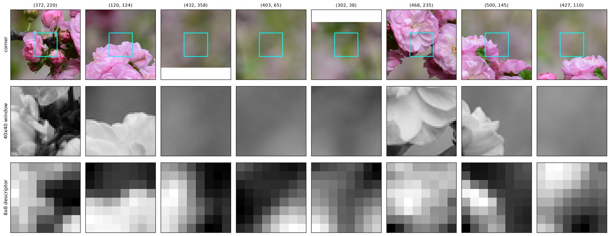
Shown are some descriptors extracted from the correspondingly labeled responses, and we see that corners with more drastic intensity extrema create more distinct descriptors.
B.3 Matching Feature Descriptors
For feature matching we use nearest neighbors, but only for valid points determined via Lowe's thresholding. The threshold (0.3) selected below follows from a figure presented in Brown et. al.
\[ \frac{\lVert d_i - d_{\mathrm{nn}_1} \rVert}{\lVert d_i - d_{\mathrm{nn}_2} \rVert} < 0.3 \]In general this yields pretty good results however looking closely one might find that certain homogenous repeated features (like windows) might have false correspondences.

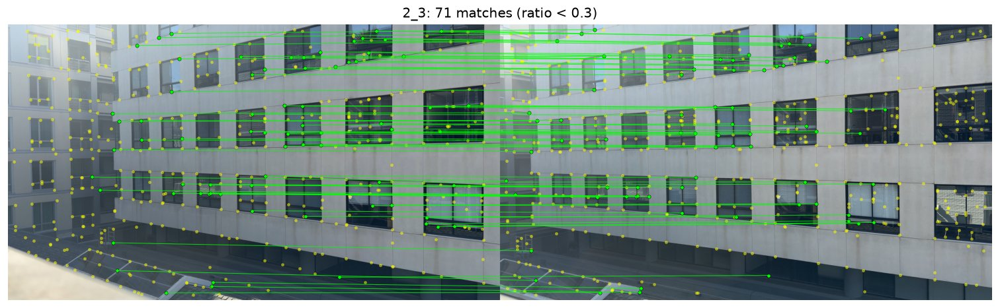

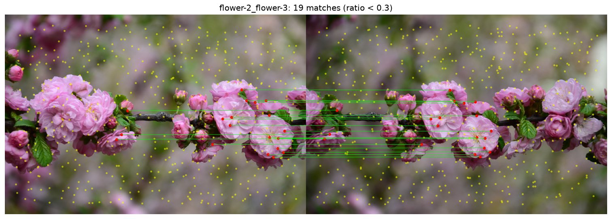

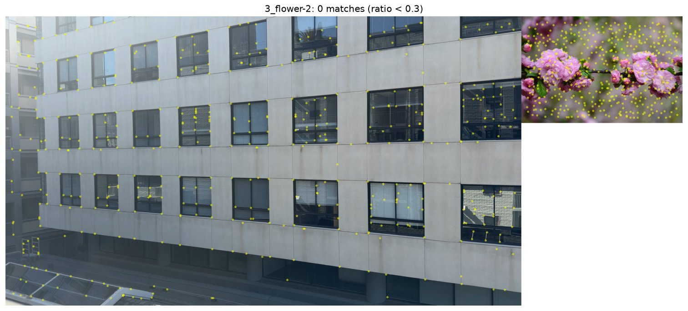
We see that images which are unrelated generally give little to no matches. (Though note the difference in scale in these images)
B.4 RANSAC for Robust Homography
The previous notion of false correspondences motiavtes more robustness in matchin descriptors. In this implementation of automatic descriptor matching we use RANSAC to achieve that. By sampling random sets of 4 correspondences and computing homography operators, we can then assess how well said homography works by seeing how far the correspondences generated by nearest neighbors and Lowe's thresholding are from that of the homography operator applied to respective points. Here we do 500 randomized samples of 4 correspondences and choose the best Homography matrix from that simulation.
\[ \lVert \pi(H \mathbf{p}_i) - \mathbf{p}'_i \rVert < r, \qquad r = 3 \text{ px} \]After computing homographies, we refit using inliers (those within an discretionary L2 error tolerance) to achieve further robustness.
| Pair | Ratio matches | RANSAC inliers |
|---|---|---|
| Courtyard 1 → 2 | 20 | 18 |
| Courtyard 2 → 3 | 71 | 60 |
| Courtyard 3 → 4 | 59 | 50 |
| Courtyard 4 → 5 | 54 | 49 |
| Courtyard 5 → 6 | 32 | 26 |
| Courtyard 6 → 7 | 191 | 179 |
| Room 1 → 2 | 45 | 39 |
| Room 2 → 3 | 33 | 29 |
| Room 3 → 4 | 24 | 19 |
| Room 4 → 5 | 29 | 22 |
| Blossom 1 → 2 | 24 | 23 |
| Blossom 2 → 3 | 19 | 19 |
| Blossom 3 → 4 | 16 | 16 |

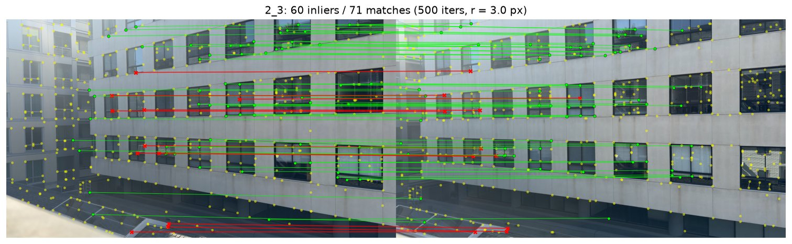

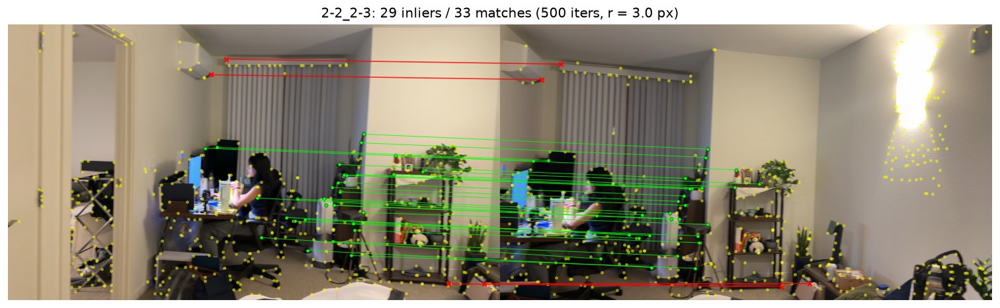

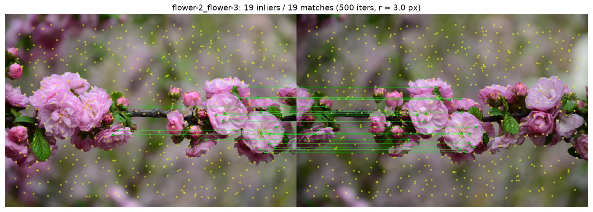
After RANSAC we see inliers and rejections as a result. Many of the errors are due to a small 3 pixel tolerance, but some are from repeating windows which was mentioned as a possible failure point for nearest neighbors with lowe's thresholding above.
Automatic mosaics
Now we compute automatic mosaics, same as in part A but with automatic feature detection and correspondence picking. The logic for blending follows exactly as in part A.
Mosaic 1: courtyard

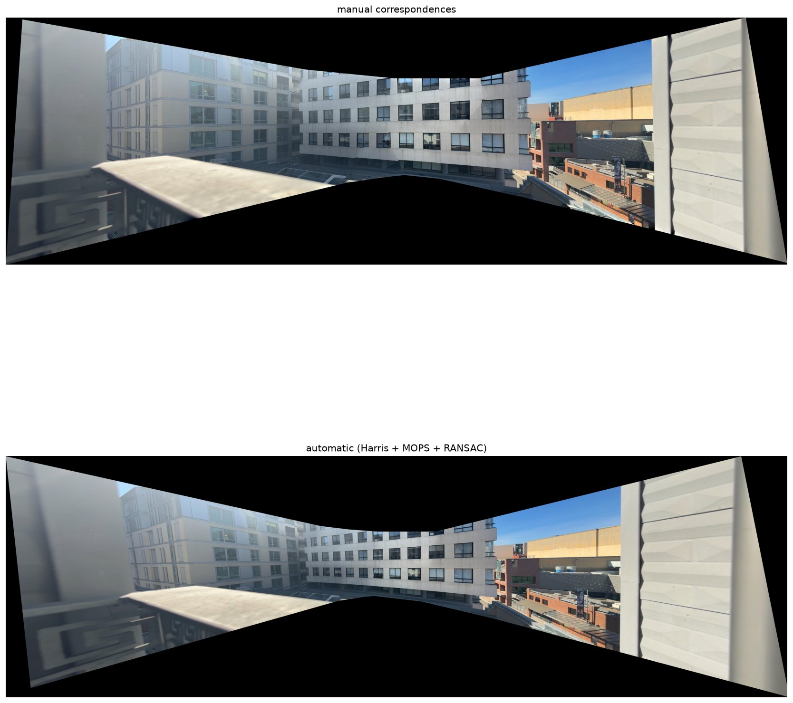
As compared to te manual correspondence picking, the automatic yields smoother seams and overall better alignment. This is certainly due to more accuracy in point picking, as well as due to the fact that there are so many more correspondences which we fit to.
Mosaic 2: room

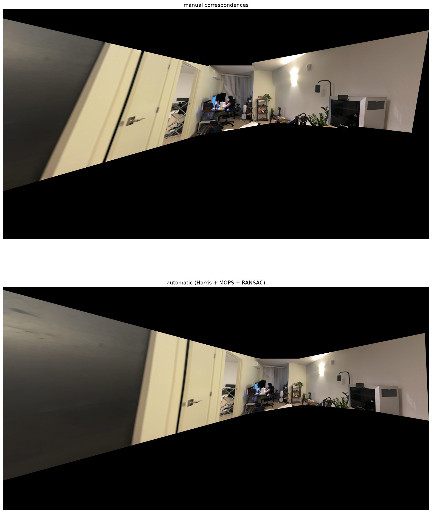
We see the same smoothing out of kinks in this image as well due to more precision in point picking. There is less warping near edges/closer points where small errors are exacerbated, and no sharp kinks moving from one capture to another
Mosaic 3: blossom branch

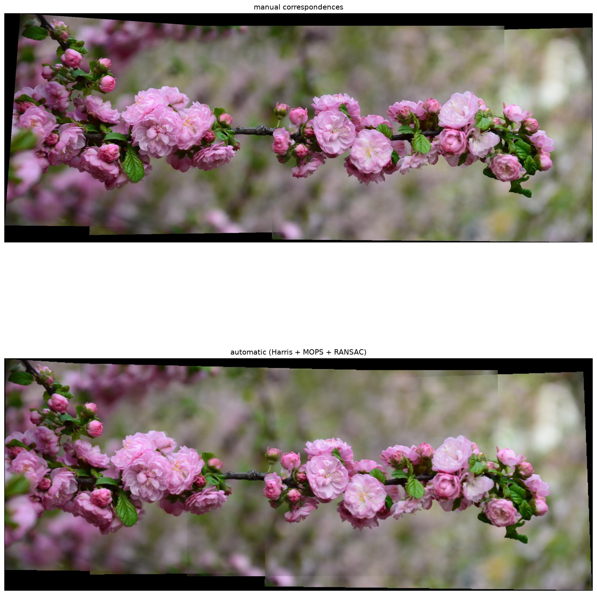
This is again from a sample set as mentioned in Part A, and there is some seam blending issues which we mitigate the same way as in Part A. Again, this photo in general seems to have more distinct descriptors, however there are some issues in the originally captured data.